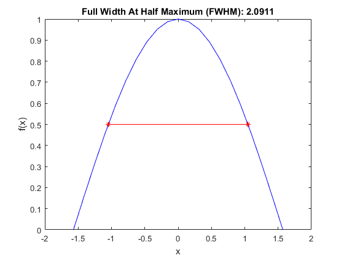

fwhm
Compute the full width at half maximum.
Syntax
fwhm_val = fwhm(f, x) fwhm_val = fwhm(f, x, plot_fwhm) [fwhm_val, fwhm_pos] = fwhm(f, x)
Description
fwhm calculates the Full Width at Half Maximum (FWHM) of a positive 1D input function f(x) with spacing given by x.
For example, running the code
x = -pi/2:pi/20:pi/2; f = cos(x); fwhm(f, x, true);
produces the output
Inputs
f |
f(x) |
x |
x data or dx |
Optional Inputs
plot_fwhm |
Boolean controlling whether a plot of the function and FWHM is produced |
Outputs
fwhm_val |
FWHM of f(x) |
fwhm_pos |
position of leading and trailing edges |